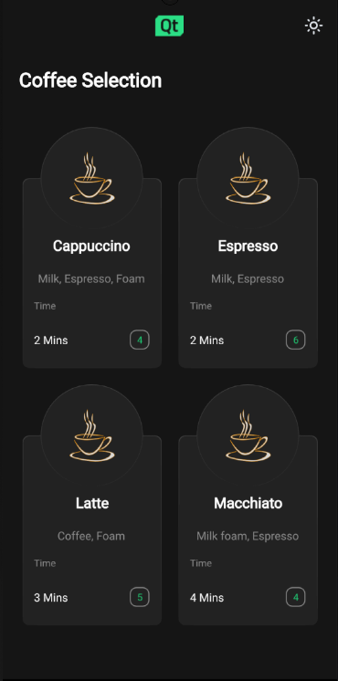

Coffee Machine
A Qt Quick application with a state-based custom user interface.

Coffee Machine example overview
This app demonstrates a cross platform, multi screen size and responsive way of implementing a typical user interface for product ordering.
Selecting a recipe

The coffee selection
The coffee machine application lets you choose a type of coffee and indicates how many coffees of that type you have left to order.
Coffee customization

Once a recipe is selected, the app displays what ratio the coffee blend will contain of:
- brewed coffee
- hot milk
- milk foam
- sugar
This can be modified using sliders.
Displaying the brewing status
Once the user has acknowledged that the cup is in the machine the brew starts.
When the brew has been started, the app shows an animated display of the brewing process.
Coffee is ready
Once the brewing process has ended, the app shows coffee cup with the desired coffee mix in it for a few seconds before returning to the starting page.
How it works
Here we discuss how these features are implemented.
Adapting to different screens
The app adapts at runtime to different target device screen types by first setting the root object ApplicationWindow QML type width and height properties to device screen available height and width.
ApplicationWindow { visible: true width: Screen.desktopAvailableWidth height: Screen.desktopAvailableHeight title: qsTr("Coffee")
From there child objects of the ApplicationWindow fetch the size of the ApplicationWindow to determine their own sizes accordingly.
The app uses GridLayout throughout the application page components to easily adapt to changes in screen orientation.
Navigating through the app pages
The application uses StackView QML type to display different pages of the app. The StackView handling the different page components is implemented in ApplicationFlowForm.ui.qml.
Navigating from one page to next triggers a state change in ApplicationFlow.qml where the needed property changes are handled by PropertyChanges QML type:
states: [ State { name: "Home" PropertyChanges { target: toolbar backButton.opacity: 0 backButton.enabled: false themeButton.opacity: 0 themeButton.enabled: false logo.sourceSize.width: 70 logo.sourceSize.height: 50 }
The animations happening during these state changes are implemented with Transition and PropertyAnimation inside the StackView component in ApplicationFLowForm.ui.qml.
Implementing start page
The application starts by showing the Home page to the user as the initial item in the StackView:
StackView { id: stack anchors.top: parent.top anchors.bottom: parent.bottom anchors.left: parent.left anchors.right: parent.right anchors.topMargin: parent.height / 20 initialItem: Home { id: home visible: true state: applicationFlow.mode } pushEnter: Transition { PropertyAnimation { property: "x" from: stack.width to: 0 duration: 400 } }
The Home component is structured by placing Item component as the root object with state machine and appropriate property aliases, followed by GridLayout. This same kind of structuring will be used in all of the app page components.
The Home page displays an image of a coffee cup with Qt logo on top, Coffee Machine as a title, caption with some catchy briefing on what the user can expect and a getStartedButton button.
The user can move forward by pressing the getStartedButton, the button onClicked function is implemented ApplicationFlow.qml:
home.getStartedbutton.onClicked: { applicationFlow.state = "Coffee-selection" stack.push(choosingCoffee) }
This will trigger the state change to "Coffee-selection" in ApplicationFlow.qml and push the choosingCoffee component on top of the Home component in StackView.
Implementing coffee selection
On the Coffee Selection page ChoosingCoffee.qml is displayed, here the user sees 4 different coffee options to choose from. These options are displayed as CoffeeCards which are located inside the GridLayout in ChoosingCoffee.qml:
GridLayout { id: cards anchors.horizontalCenter: parent.horizontalCenter anchors.top: parent.top rowSpacing: 20 columnSpacing: 20 CoffeeCard { id: cappuccino coffeeName: "Cappuccino" ingredients: "Milk, Espresso, Foam" time: 2 cupsLeft: applicationFlow.cappuccinos } CoffeeCard { id: latte coffeeName: "Latte" ingredients: "Coffee, Foam" time: 3 cupsLeft: applicationFlow.lattes } CoffeeCard { id: espresso coffeeName: "Espresso" ingredients: "Milk, Espresso" time: 2 cupsLeft: applicationFlow.espressos } CoffeeCard { id: macchiato coffeeName: "Macchiato" ingredients: "Milk foam, Espresso" time: 4 cupsLeft: applicationFlow.macchiatos } }
The implementation of the CoffeeCard is located CoffeeCard.qml.
These cards may be displayed in either grid or in a row type of way depending on the available screen width and height properties that the ApplicationWindow root object follows and passes down to the ChoosingCoffee.qml and to the GridLayout in there through the state machine.
CoffeeCards vary in their names, brewing times, ingredients and how many cups there are available at the moment.
On this page the user can also change the application theme for the first time by pressing the little sun looking icon button from the upper right corner of the screen. Pressing the theme button calls themeButton function in ApplicationFlow.qml:
function themeButton() { if (Colors.currentTheme == Colors.dark) { Colors.currentTheme = Colors.light } else { Colors.currentTheme = Colors.dark } }
The function changes the currentTheme property of Colors.qml and colors change throughout the app by property bindings automatically. All the colors used in app are located in Colors.qml.
If theme is switched to light theme the theme changing icon button icon turns to represent a half moon.
Pressing on any of the coffee cards triggers a state change inside AbstractButton in CoffeeCard.qml which then triggers NumberAnimation through Transition:
AbstractButton { width: parent.width - 2 height: parent.height - 2 anchors.horizontalCenter: parent.horizontalCenter anchors.verticalCenter: parent.verticalCenter id: button hoverEnabled: true checkable: true enabled: (cupsLeft != 0) ? true : false transitions: Transition { NumberAnimation { properties: "scale" duration: 50 easing.type: Easing.InOutQuad } }
This will scale the selected coffee card down to smaller size and turns the edges of the card to green giving user the expression that the coffee was indeed selected.
Every coffee cards button property alias onClicked function binds to a function located in ApplicationFlow.qml. When user presses any of the coffee cards the function with a name correlating with the chosen coffee option gets called. The function will set the state of ApplicationFlow.qml to Settings , push a new component to the StackView and set the ingredient properties accordingly.
Implementing coffee settings
On this page the user can customize their coffee option to match their preference by adjusting custom Slider QML types. Changing the value of sliders will affect the liquid levels seen inside the coffee cup, this is made possible by binding the height of the liquid images inside Cup.qml to the values of corresponding sliders.
The values of the sliders will be stored to property variables in ApplicationFLow.qml through onValueChanged function.
coffeeSlider.onValueChanged: { applicationFlow.coffeeAmount = coffeeSlider.value }
Clicking on Start button changes the state of ApplicationFlow.qml to "Insert", and the app displays the Insert.qml.
Implementing insert cup
On this page the user is instructed to insert their cup on to the machine before the brewing process can start.
Pressing the Continue button will move app to Progress page.
Implementing brewing coffee
Progress page displays a coffee cup and progress bar that will both in their own way signal the brewing process in real time.
The coffee cup here once filled will display the exact same configuration as the user selected on Settings page, this is made sure by binding the Cup property variables to the saved corresponding values in ApplicationFlow.qml.
The animation for filling the coffee cup happens with state engines Transition and SmoothedAnimation.
Cup { id: cup Layout.alignment: Qt.AlignHCenter | Qt.AlignTop state: "0" }
The progress bar animation is implemented with Behavior.
Behavior on greenBar.width { SmoothedAnimation { easing.type: Easing.Linear velocity: (contentItem.width / brewTime) * 1000 } }
Timer will take care of updating the application state once the brewing is done.
Timer { id: timer interval: brewTime running: true onTriggered: { applicationFlow.onFinished() } }
Implementing coffee ready
Ready page displays a coffee cup filled with whatever configuration the user selected with a "Your coffee is ready" text and a check icon.
When this page is displayed a Timer starts running and once the interval set is reached user is directed back to Home.qml.